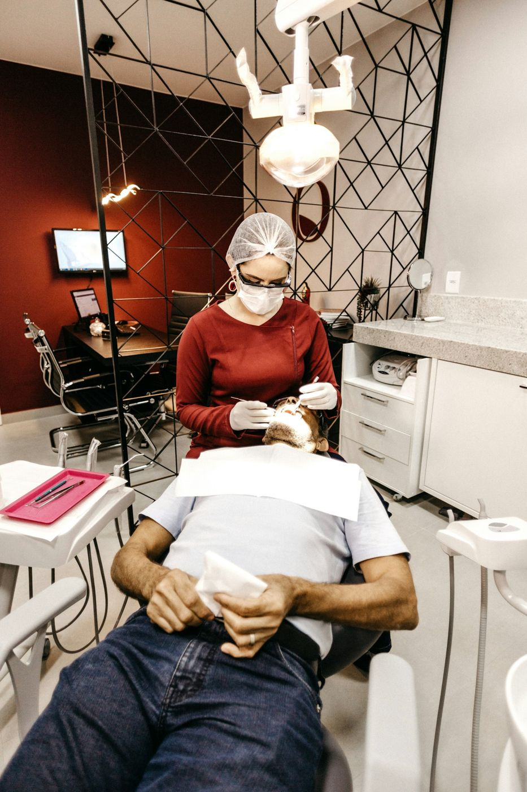
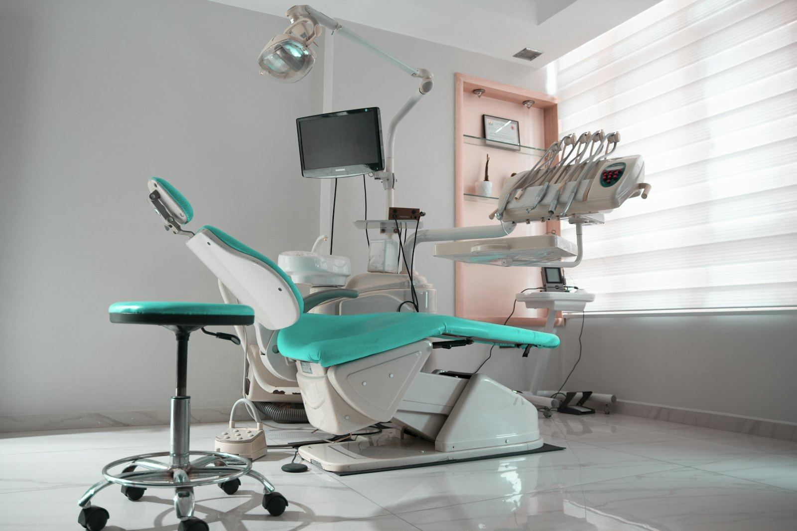

Un sourire en bonne santé, des soins sans douleur.
Votre sourire au cœur de nos priorités : soins, urgences, esthétique et enfants à Akae, avec le Dr Jacquie NDOUTOUME, chirurgien-dentiste.
- Noté 4,6 / 5 par nos patients
- Devis clair avant tout soin important

Toute la dentisterie, au même endroit

Bilan et détartrage
Le contrôle complet de vos dents et de vos gencives, suivi d'un détartrage et d'un polissage.

Soins des caries
Obturations couleur de la dent, dévitalisations : on soigne sans douleur, sous anesthésie locale.

Implants dentaires
Remplacer une dent manquante de façon durable et naturelle, sans toucher aux dents voisines.

Couronnes et prothèses
Couronnes céramique, bridges et appareils : retrouver un sourire complet et une bonne mastication.

Blanchiment
Un sourire plus éclatant en toute sécurité, après un bilan et un détartrage.

Dentisterie pour enfants
Des soins doux pour les plus petits, dès 3 ans, pour qu'ils n'aient jamais peur du dentiste.
Votre parcours en 4 étapes
- 1
Prenez rendez-vous
En ligne, par téléphone ou WhatsApp. Urgence ? Rendez-vous dans la journée.
- 2
Le bilan
Examen complet, radio si besoin, et explication de ce qu'on voit.
- 3
Le devis
Un plan de traitement clair et un devis avant tout soin important.
- 4
Les soins
Des soins sans douleur, et un suivi régulier pour garder un sourire en bonne santé.

Dr Jacquie NDOUTOUME
Chirurgien-dentiste. Il vous reçoit, vous explique chaque soin avant de commencer et vous accompagne dans la durée, de l'enfance à l'âge adulte.
- Soins sous anesthésie locale, sans douleur
- Devis détaillé avant chaque traitement
- Matériel stérilisé à chaque patient
4 gestes pour garder de belles dents
2 fois par jour
Brossez-vous les dents 2 minutes, matin et soir.
Le fil dentaire
Une fois par jour, là où la brosse ne passe pas.
Moins de sucre
Limitez sodas et sucreries entre les repas.
Tous les 6 mois
Un contrôle et un détartrage, même sans douleur.
Patients assurés bienvenus
Présentez votre carte d'assuré à l'accueil.
- SUNU Assurances
- Mutuelles d'entreprise
Ils nous ont fait confiance
« Je redoutais la piqûre et je n'ai rien senti. Docteure très douce et cabinet impeccable. »
« Rage de dents un samedi matin : reçu dans l'heure, soulagé le jour même. Merci à toute l'équipe. »
« Mon fils de 5 ans est ressorti en souriant et réclame déjà sa prochaine visite ! »
J'ai très mal aux dents, que faire ?
Appelez-nous le jour même au 065 66 85 85 : nous gardons des créneaux pour les urgences. En attendant, un antidouleur classique et du froid sur la joue.
Les soins font-ils mal ?
Non. Tous les soins sont faits sous anesthésie locale, et nous vérifions qu'elle agit avant de commencer.
Mon assurance est-elle acceptée ?
Le cabinet fait partie du réseau de soins SUNU Assurances. Pour les autres assurances et mutuelles, appelez-nous avec votre carte d'assuré.
À quel âge amener mon enfant ?
Dès 3 ans pour une première visite, même sans problème : c'est le meilleur moyen d'éviter la peur du dentiste.
Envie d'un sourire en pleine forme ?
Prenez rendez-vous en ligne, nous vous confirmons le créneau par WhatsApp.